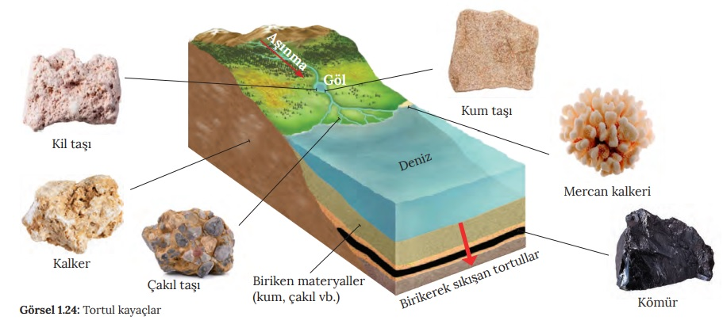

YER KABUĞU KAYAÇLARDAN OLUŞUR
3. sınıf Fen Bilimleri dersinde Dünya’nın katmanlarından birinin yer kabuğu olduğunu öğrenmiştik. Yer kabuğunun karalar ve sularla kaplı olduğunu biliyoruz. Canlılar, Dünya’nın dış katmanında yani yer kabuğunda yaşarlar. Yer kabuğunda dağlar, tepeler, ovalar, vadiler, yaylalar gibi yeryüzü şekilleri bulunur. Kayaçlar Nedir? Kayaçların Oluşumu Kayaçlar nasıl oluşur? Manto katmanında bulunan magmanın yeryüzüne ulaşarak soğuyup katılaşmasıyla kayaçlar oluşur. Kayaçlar, yer kabuğunun kara tabakasını oluşturur. Yer kabuğundaki kayaçlar değişik amaçlarla kullanılır. Örneğin kum ve taş bina yapımında kullanılır. Mermer, inşaatlarda ve heykel yapımında kullanılır. Granit, zemin ve duvar yapımında kullanılır. Çeşitli Kayaç Örnekleri Mineral Nedir? Kayaçların birbirinden farklı özellikte olmasını sağlayan ve yapılarını oluşturan maddelere mineral adı verilir. Mineraller doğal yollarla oluşan belli özelliklere sahip katı maddelerdir. Örneğin Pamukkale Travertenleri’nin beyaz renkte ve yumuşak bir yapıda olması bu mineraller sayesindedir. Kayalar rüzgâr, sıcaklık farkı, yağmur ve akarsu gibi dış faktörlerle parçalanır. Bunun sonucunda kayalar, çakıl, taş ve kum taneciklerine dönüşür.
KAYAÇLARIN ÖZELLİKLERİ
Üzerinde yaşadığımız yer kabuğu, çeşitli yapı ve büyüklükteki taşlarla kaplıdır. Taş olarak bildiğimiz bu maddeler kayaçtır. Doğada büyük yer tutan bir veya birden fazla mineralden oluşan kaya ve taş parçalarına kayaç adı verilmektedir. Çevremizde gördüğümüz taş diye adlandırdığımız yapıların her biri birer kayaç örneğidir. Günlük hayatta adını zaman zaman duyduğumuz kömür, mermer, kum, çakıl, kireç taşı, kil, granit, altın, elmas bunlardan bir kaçıdır. Kayaçlar çok değerlide olabilir, sıradan ve değersizde olabilir.
Üzerinde yaşadığımız yer kabuğu, çeşitli yapı ve büyüklükteki taşlarla kaplıdır. Taş olarak bildiğimiz bu maddeler kayaçtır. Doğada büyük yer tutan bir veya birden fazla mineralden oluşan kaya ve taş parçalarına kayaç adı verilmektedir. Çevremizde gördüğümüz taş diye adlandırdığımız yapıların her biri birer kayaç örneğidir. Günlük hayatta adını zaman zaman duyduğumuz kömür, mermer, kum, çakıl, kireç taşı, kil, granit, altın, elmas bunlardan bir kaçıdır. Kayaçlar çok değerlide olabilir, sıradan ve değersizde olabilir.
Kayaçların oluşumu sırasında, yapılarında bulunan maddeler onlara farklı özellik kazandırmıştır. Bu farklı özelliklere göre kayaçlar değişik adlar alır. Kayaçların birbirinden farklı olmasını sağlayan ve yapılarını oluşturan maddelere mineral adı verilir. Mineraller doğal yollarla oluşan belli özelliklere sahip katı maddelerdir.
Ekonomik değeri olan taş, kayaç ve minerallere maden denir. Yer kabuğunu oluşturan kayaçların
bir kısmı maden olarak nitelendirilir. Yer kabuğunu
oluşturan kayaçlar arasında madenler önemli bir yere
sahiptir. Önemli madenler altın, gümüş, bor, bakır, taş
kömürü, elmas, yakut, zümrüt, kurşun ve çinko başlıca madenlerimizdendir.
Madenlerin özellikleri şunlardır:
Ekonomik değere sahiptirler.
İşlenerek pek çok alanda kullanılırlar.
Demir madeni sanayinin pek çok alanında ve inşaatlarda, Bakır madeni elektrik elektronik sanayisinde, mutfak eşyası yapımında vb. yerlerde kullanılır. Alüminyum da çok fazla kullanım alanı olan bir madendir. Bugün uçak ve otomobil sanayisinde, inşaat gibi alanlarda alüminyum kullanılmaktadır. Bor madeni; uzay teknolojisinde, askerî sanayide, tıpta, elektrik sektöründe, sanayi camlarının üretiminde kullanılmaktadır. Mermer de bir madendir. Mutfak tezgâhları, merdiven gibi yerler de mermerlerin kullanım alanlarıdır.
FOSİLLER
Milyonlarca yıl önce yaşamış olan bitki ve hayvan kalıntılarının toprağın altındaki taşlaşmış haline fosil denir. Fosil grubuna giren kalıntılar; kemik, diş, kabuk, bitki ve hayvanların sert kısımlarıdır. Fosillerin neredeyse tamamı üst üste birikimlerle oluşan kayaçların içinde bulunur. Bu kayaç türü bataklık, göl ve denizlerde katmanlar hâlinde biriken tortullardan oluşur. Fosillerin birçoğu ya deniz hayvanlarına ya da suya yakın yerlerde yaşayan hayvanlara aittir. Canlı bir varlıktan fosile dönüşmek milyonlarca yıl süren bir dönemdir.
MADENLER
Yer kabuğunda bulunan bazı kayaçların ekonomik değeri çok yüksektir. Örneğin altın ekonomik değeri yüksek bir kayaçtır.
Maden Nedir?
Yer kabuğunun derinliklerinde, çeşitli doğal etkenlerle oluşan ve ekonomik değeri olan kayaçlara maden adı verilir.

Ülkemizde çıkarılan önemli madenlere bor, altın, bakır, gümüş, mermer, linyit, taş kö